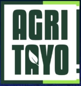

<ion-header >
  <ion-toolbar> 
    

    
  </ion-toolbar>
</ion-header> 

<ion-tabs style="top: 60px;"  tabbarPlacement="top" primary  > 
  <ion-tab-bar slot="top"> 
    <ion-tab-button tab="monitoring" >
      <ion-icon name="desktop-outline"></ion-icon>
      <ion-label>Monitoring</ion-label>
    </ion-tab-button> 
    <ion-tab-button tab="farmer-applicant">
      <ion-icon name="people-circle-outline"></ion-icon>
      <ion-label>Farmer approval</ion-label>
    </ion-tab-button>  
  </ion-tab-bar> 
</ion-tabs>

    